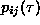
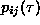

The time delayed mutual information was suggested by Fraser and
Swinney [25] as a tool to determine a reasonable delay: Unlike the
autocorrelation function, the mutual information takes into account also
nonlinear correlations. One has to compute
where for some partition on the real numbers  is the probability to find
a time series value in the i-th interval, and  is the joint
probability that an observation falls into the i-th interval and the
observation time
is the probability to find
a time series value in the i-th interval, and  is the joint
probability that an observation falls into the i-th interval and the
observation time  later falls into the j-th. In theory this expression
has no systematic dependence on the size of the partition elements and can be
quite easily computed. There exist good arguments that if the time delayed
mutual information exhibits a marked minimum at a certain value of
later falls into the j-th. In theory this expression
has no systematic dependence on the size of the partition elements and can be
quite easily computed. There exist good arguments that if the time delayed
mutual information exhibits a marked minimum at a certain value of  ,
then this is a good candidate for a reasonable time delay. However, these
arguments have to be modified when the embedding dimension exceeds two.
Moreover, as will become transparent in the following sections, not all
applications work optimally with the same delay. Our routine mutual uses
Eq.(
,
then this is a good candidate for a reasonable time delay. However, these
arguments have to be modified when the embedding dimension exceeds two.
Moreover, as will become transparent in the following sections, not all
applications work optimally with the same delay. Our routine mutual uses
Eq.( ), where the number of boxes of identical size and
the maximal delay time has to be supplied. The adaptive algorithm used
in [25] is more data intensive. Since we are not really interested in
absolute values of the mutual information here but rather in the first
minimum, the minimal implementation given here seems to be sufficient. The
related generalized mutual information of order two can be defined using the
correlation sum concept (Sec.
), where the number of boxes of identical size and
the maximal delay time has to be supplied. The adaptive algorithm used
in [25] is more data intensive. Since we are not really interested in
absolute values of the mutual information here but rather in the first
minimum, the minimal implementation given here seems to be sufficient. The
related generalized mutual information of order two can be defined using the
correlation sum concept (Sec. , [26, 27]).
Estimation of the correlation entropy is explained in Sec.
, [26, 27]).
Estimation of the correlation entropy is explained in Sec. .
.